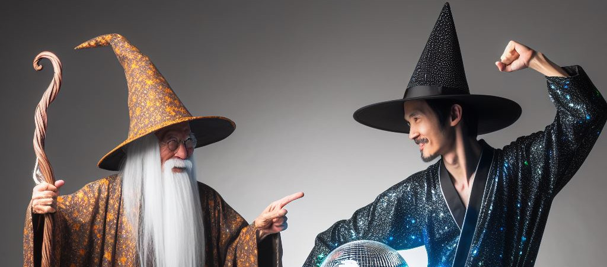

Ximira e o dançarino maravilhoso
Era o auge dos anos 70, uma época de mudanças e revoluções. Em meio a tudo isso, duas figuras se destacavam: o grande professor Ximira e o grande dançarino Asdrubal.
Professor Ximira, um ancião respeitado e sábio, era conhecido por sua mente aguçada e seu amor pelo conhecimento. Ele acreditava que a educação era a chave para um futuro melhor e dedicava sua vida a ensinar os jovens.
Asdrubal, por outro lado, era um dançarino talentoso e carismático. Ele acreditava no poder da música e da dança para unir as pessoas e trazer alegria ao mundo. Sua habilidade para dançar era incomparável, e ele era amado por todos.
Um dia, um desafio foi lançado. Uma competição seria realizada para determinar quem era o verdadeiro mestre de suas respectivas artes. O professor Ximira e o dançarino Asdrubal foram escolhidos para representar seus campos.
A competição foi intensa. O professor Ximira usou sua inteligência e sabedoria para resolver quebra-cabeças complexos e responder a perguntas difíceis. Asdrubal, por sua vez, encantou a todos com sua dança elegante e movimentos graciosos.
No final, no entanto, não houve um vencedor claro. Ambos eram mestres em suas respectivas artes e tinham muito a oferecer ao mundo. Eles perceberam que não estavam em competição um com o outro, mas sim trabalhando juntos para tornar o mundo um lugar melhor.
Desde aquele dia, o professor Ximira e o dançarino Asdrubal se tornaram grandes amigos. Eles continuaram a ensinar e a dançar, inspirando muitos ao longo do caminho. E embora suas abordagens fossem diferentes, eles compartilhavam a mesma paixão: fazer a diferença no mundo.